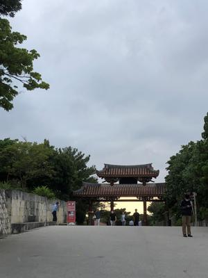
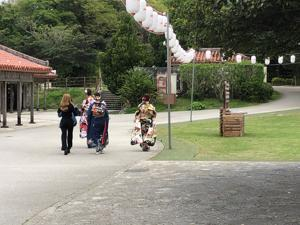

うるがいの話 ある日
最新: ギターカラオケ【うるがいの話 ある日】とは 一日だけのプログです
『うるがいの話』の最新一日だけのプログで、通信料が少なく経済的だ。カニの画像をクリックすると全ての日付が載る『うるがいの話』サイトを表示します
|
|
【うるがいの話】 うるがい(ｳﾙｶﾞｲ urugai)とは、『もずくがに』の名前でとても大きくなります。 |
|---|---|
|
|
【カミマヤーの話】 猫のことを方言でマヤーといいます。カミマヤー（kamimayaa）とは、神の猫のことです。 |
|
【たながぁの音楽】 たながぁ（ﾀﾅｶﾞｰtanagaa）とは手長えびのことで、何種類かあり大きいのは車 エビぐらいになります。 |

|
【ぶながぁの話】 ぶながー(bunagaa)とは、赤い髪の毛、赤い身体、そして身長は１ｍ２０ｃｍ ぐらい、川の蟹を食べているの目撃された。場所は沖縄県国頭郡大宜味村のと ある村僕の隣近所に住んでいる爺さんから、聞いた話です。 |
|
|
【ギーマの話】 ギーマ(giima)とは、山原の里山に咲くスズランに似た、 花を付けます。実は食べられます、 気が付くと口の周りが紫になっています。 |
2022年03月21日 (月）ギターカラオケ
16:06

ギターでカラオケをする。ユーチューブにある動画で、それに合うギターコー
ドをネットで探し，動画の演奏をＢＧＭにギターでコードを演奏すること。こ
の前ラジオを聴いていたら、古い曲の『なごり雪』が流れていた。ラジオのト
ークでは３０代までだとこの曲は知っているとの話だった。早速、カラオケす
るための準備を始める。動画をキャプチャーし、それに合うギターコードを捜
し、ギターでイントロだけ演奏し音が合うか確認をする。動画にコードがあれ
ばそのまま演奏できるので楽であるが。今回、準備したのは４曲
なごり雪/イルカ カポ５ Ｃから
少年時代/井上陽水 カポ２ Ｇから
糸/中島みゆき カポ３ Ｇから
時代/中島みゆき カポ１ Ａ７から
いままでのギターカラオケで、ゾクとした曲は暗い暗い五輪真弓の『恋人よ』
が最高！、コード進行が凄い。ギターに興味が無ければチンプンカンプンだと
思うが・・。今年初めの屋敷うがんをする、蚊に噛まれた。

１６時００分 ビットコインの総資産 ￥１４、１０５↓